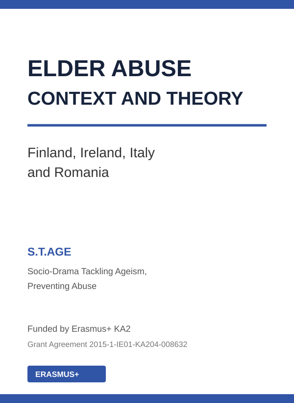

SpoodleSpace
A full-stack social platform for dog communities, designed around profiles, posts, interaction and a decoupled REST architecture.

I'm Sam — a software developer, researcher and public-service professional. I combine engineering with deep experience in sociology, policy and community development to build digital products with context, clarity and purpose.
Across my work
Selected work
Projects where product thinking, engineering and user needs meet.
A full-stack social platform for dog communities, designed around profiles, posts, interaction and a decoupled REST architecture.

A community application connecting owners through shared content and interests.

A playful, responsive fan experience featuring an interactive curse generator, character history and a distinctive movie-inspired visual identity.

An educational resource and digital community hub designed to foster connection, belonging and cultural understanding across Saggart and Citywest.

A mobile-first learning hub and accessible quiz exploring Yellowknife’s peoples, histories, languages and civic life through sourced content.
Experience
My route into software wasn't linear. That's an advantage: I bring years of experience understanding institutions, communities and the people technology ultimately serves.
Working in public service and information systems, contributing technical capability within a citizen-centred environment.
People-first initiatives, cross-sector collaboration and sustainable social outcomes.
Professional work spanning inclusion, education, policing, advocacy and social policy.
Research & publications
Academic and applied research continues to shape how I investigate problems, evaluate evidence and communicate complexity.

EU Erasmus+ research publication · 2016Elder Abuse, Context and Theory: Finland, Ireland, Italy and RomaniaMarita O'Brien, Sam O'Brien-Olinger and collaborators · S.T.AGEPolicy reviewValue for Money and Policy Review of Youth ProgrammesHow I work
I approach software as both a technical and human problem. Good implementation matters, but so do the questions asked before a line of code is written: Who is this for? What do they actually need? What assumptions are we making? Can everyone use it?
Start with evidence, context and the actual problem.
Reduce friction and make complexity understandable.
Ship maintainable, accessible technology with purpose.
Get in touch
Interested in software, public-interest technology, research or collaboration?
Send me an email